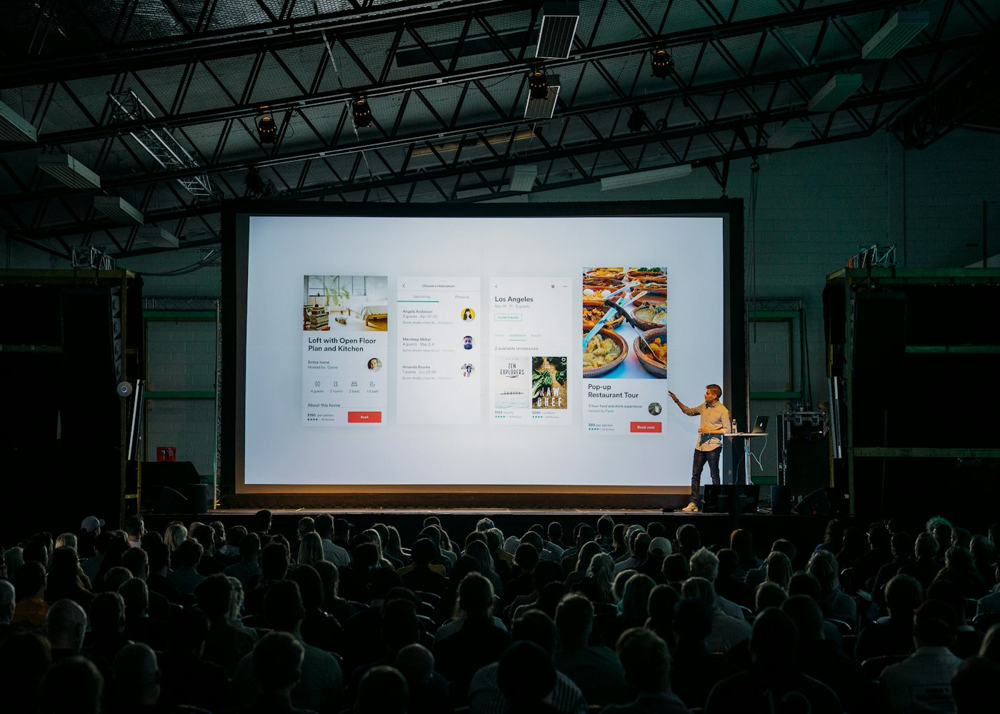

Learn
Overviews
Introductions to the profession, like What Is Management Consulting?
Events
Most HCG sessions are open to every Hamilton student. Come to one, and you will leave knowing more about consulting than when you walked in.


Coming up
Sessions will appear here with the date, room, and whether they count toward Active Membership. Join general programming to hear about each one as soon as it is scheduled.
What we run
Learn
Introductions to the profession, like What Is Management Consulting?
Learn
Workshops and conversations with alumni and employers.
Prepare
Hands-on case workshops, like the Case Interview Crash Course.
Prepare
Practice cases with other members, with feedback on structure, math, and delivery.
Practice
Team meetings for students staffed on Quill projects. How Quill works